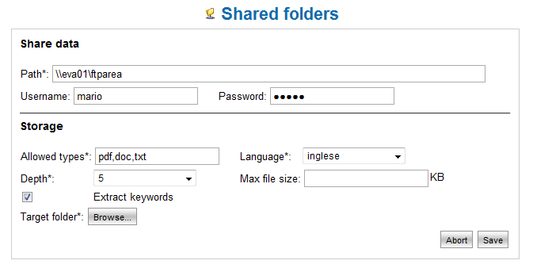

Import Documents from Remote Folders |
| The Import from Remote Folders feature is available only for the Commercial version of LogicalDOC: LogicalDOC Enterprise Edition. Check the site of LogicalDOC: www.logicaldoc.com for more information. | |
When LogicalDOC Enterprise Edition comes installed inside of a network constituted also from other computers that share folders, it is possible to import all documents automatically you flavored yourself by means of the function “Remote Folders”.
This characteristic of LogicalDOC EE has been head with all the normal Windows sharings and also with sharings SAMBA that are possible to shape on the UNIX/Linux systems.
Configuration of the remote folder
In order to approach the operating page continuations the distance: Administration --> Remote Folders.
In this currently set up area it comes visualized the directory of the remote folders.
Up on the left icon “the New remote folder” the hit concurs with the mask for the new insertion folders.
It is possible to take part on the several ones folders shaped using the icons to right of the distance of the folder.
The three icons they carry out the following functions: modification, activation/deactivation import, erasure remote folder.

Illustration 02: Formulations of a remote folder
The advanced part of the card concurs in particular to insert the data of logon to the folder and:
- Remote path (Path)
- Username (optional)
- Password (optional)
The remote path (Path) represents the folder that comes shared on the remote computer, to notice that the elements of the path are separated by the character “\” (if used “/” this will come however converted in “\”).
The name of the computer is the of identification one with which the machine it comes addressed on the local network.
The illustration precedence extension the configuration of the remote folder ftparea on the server eva01.

Illustration 03: Remote folder from Windows
In case the remote folder was protect, is also possible to set up username and password for the authentication.
The inferior part of the card concurs to set up the information for the acquisition of documents and therefore:
- The considered extensions (comma separated list)
- The language in which they will come imported documents (much important one to the aims of the search)
- The level of depth
- The folder of the archive documents them in which saving documents
- The maximum dimension of the document to consider
- If keywords must be extracted or not
Once the formulations saved, to regular intervals the remote folder and all its under-folders till the level of set up depth, will come explored to
document search. The single documents with admitted extension will come indexed and inserted in the archive it beginning from documents them the folder in set up archive.
It is important to consider the fact that all under-folders of the remote sharing will come replied also in the archive document them of LogicalDOC.